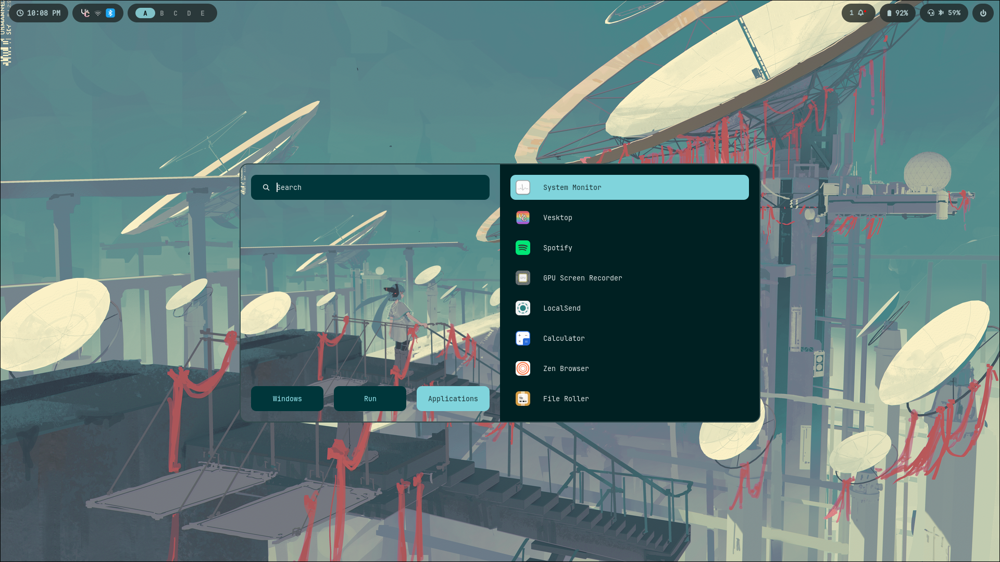
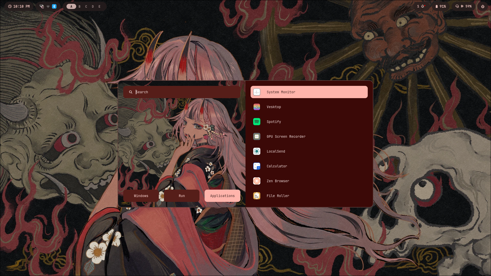

Arch Linux
How to Rice Arch
A dark Gruvbox walkthrough with two levels: build your own with AI, or install binnewbs/arch-hyprland.
Theme: Gruvbox Dark · Target: Hyprland on Arch · Google Slides via How-to-Rice-Arch.pptx
Basics
What “ricing” means
Customizing your desktop until it looks intentional — colors, fonts, bar, terminal, wallpaper, and animations speaking the same language.
Compositor
Hyprland manages windows, gaps, blur, and keybinds.
Bar + launcher
Waybar + Rofi give you status and app launch.
Terminal + theme
Kitty + Gruvbox / Matugen keep everything cohesive.
Choose your path
Two levels, one slideshow
Level 1 — Make your own with AI
- Design the look piece by piece
- Cursor / chat helps write configs
- Learn Hyprland, Waybar, Kitty deeply
- Ends as your own dotfiles repo
Level 2 — Use arch-hyprland
- Clone binnewbs/arch-hyprland
- Matugen colors from wallpapers
- Waybar, Rofi, SwayNC, Kitty ready
- Tweak paths, then make it yours
Before you start
Prerequisites
System
- Arch (or Arch-based) installed
- Normal user with sudo
- Network + graphics drivers
- AUR helper: yay or paru
- Backup of existing ~/.config
Mindset
- Comfortable editing in a terminal
- Can recover from a TTY if needed
- Wallpapers folder ready
- Nerd Font (JetBrains Mono)
- Rice is iterative
The stack
Core pieces of a Hyprland rice
●HyprlandWayland compositor — windows, gaps, blur, keybinds
●WaybarStatus bar — workspaces, clock, tray, modules
●KittyGPU terminal — fonts + Gruvbox / Matugen colors
●RofiApp launcher + wallpaper picker UI
●SwayNCNotification center / control panel
●swww + MatugenWallpaper daemon + auto color scheme generator
●hyprlock / idle / wlogoutLock, idle, and logout menu
Visual language
Dark Gruvbox palette
Keep every app on these hex values — or let Matugen derive a matching set from wallpaper.
Level 1
Make your own rice with AI
You own every config. Cursor (or any AI) writes the boring parts while you decide the look.
Level 1 · Workflow
Build loop with an AI pair
01Install base packageshyprland waybar kitty rofi-wayland swww grim slurp wl-clipboard
02Boot Hyprland bareGet a terminal + keybinds working before styling
03Lock Gruvbox earlyPaste palette into kitty, waybar, hypr borders
04Iterate with AIPaste errors + screenshots; ask for exact config diffs
05Commit dotfilesKeep ~/.config/hypr waybar kitty in a git repo
Level 1 · Packages
Starter pacman + AUR set
# Official repos
sudo pacman -S hyprland waybar kitty rofi-wayland swww \
hyprlock hypridle grim slurp wl-clipboard brightnessctl \
playerctl pipewire wireplumber networkmanager \
ttf-jetbrains-mono-nerd noto-fonts-emoji
# AUR (yay/paru)
yay -S swaync-git wlogout matugen-bin # optional but nice
# Then: copy a minimal hyprland.conf, open Kitty with Super+Q,
# and only then start theming.
Level 1 · AI prompts
Good prompts to give Cursor
1.“Make my Hyprland borders and Waybar use Gruvbox Dark; here is my current style.css.”
2.“Write a dwindle layout hyprland.conf with Super+Q kitty, Super+R rofi, gaps 5/10.”
3.“Fix this Waybar JSONC — modules-right should show pulse, network, clock.”
4.“Generate a Kitty Gruvbox dark theme matching #282828 / #ebdbb2.”
5.“Add a wallpaper picker script using swww + rofi.”
Level 2
Use binnewbs/arch-hyprland
Personal Hyprland rice with Matugen-driven colors, swww wallpapers, Waybar layouts, Rofi, SwayNC, Kitty, Cava, and wlogout.
Level 2 · Look
What this rice looks like


Screenshots from github.com/binnewbs/arch-hyprland · Matugen palette follows wallpaper
Level 2 · Install
Clone and place the configs
# Backup first
cp -a ~/.config ~/.config.bak.$(date +%F)
git clone https://github.com/binnewbs/arch-hyprland.git ~/arch-hyprland
cd ~/arch-hyprland
# Merge carefully — don’t blind-overwrite paths you still need
cp -r .config/* ~/.config/
cp -r wallpapers ~/Pictures/wallpapers # or symlink
cp .zshrc ~/.zshrc # optional
- Install matching packages: hyprland, waybar, kitty, rofi, swww, swaync, matugen, wlogout, cava, fastfetch
- Edit absolute paths (upstream uses /home/beentang/... in places)
- Reload: hyprctl reload · restart Waybar · pick a wallpaper with wppicker
Level 2 · Secret sauce
Matugen + swww workflow
Theme colors regenerate from the wallpaper so you rarely hand-edit every color file.
1. Pick wallpaper
wppicker.sh → Rofi preview from ~/Pictures/wallpapers
2. Matugen image
matugen image <file> writes templates for each app
3. Live reload
Hooks reload Waybar, Kitty, Hyprland, Cava
4. Enjoy
Borders, bar, terminal, GTK, Rofi, Discord/Spotify templates
Level 2 · Repo map
Where things live
.config/hypr/ hyprland.conf + colors + scripts (wppicker, volume…)
.config/hypr/configs/ keybinds, looknfeel, windowrules, animations
.config/waybar/ layouts + style CSS + Matugen colors.css
.config/kitty/ kitty.conf + colors.conf
.config/matugen/ config.toml + templates for every themed app
.config/rofi/ launcher theme + colors.rasi
.config/swaync/ notification center style
.config/wlogout/ logout menu
.config/cava/ audio visualizer
wallpapers/ starter wallpapers for Matugen
Pick a lane
Level 1 vs Level 2
| Level 1 · DIY + AI | Level 2 · arch-hyprland |
|---|
| Speed to pretty desktop | Slower | Fast |
| Learning depth | Highest | Medium — still tweak paths |
| Maintenance | You own every line | Upstream + your forks |
| Color system | Hand Gruvbox or Matugen | Matugen-first |
| Best when… | You want a signature look | You want this rice now |
Finishing
Make it feel finished
●FontsJetBrains Mono Nerd everywhere — bar, terminal, Rofi
●GTK + iconsMatch dark Gruvbox / Material; set cursor theme
●Blur & gapsrounding 10, gaps 5/10, inactive opacity ~0.8 (like this rice)
●Lock screenhyprlock wallpaper + Gruvbox text colors
●Dotfiles hygienegit init your ~/.config slices; never commit secrets
●Screenshot flexgrim + slurp; keep a before/after pair
Links
Resources
Waybargithub.com/Alexays/Waybar
Now go rice
Pick a level. Ship a desktop.
Level 1 — design with AI until it feels like yours.
Level 2 — start from arch-hyprland, then fork the look.
Import How-to-Rice-Arch.pptx into Google Slides: File → Import slides → Upload